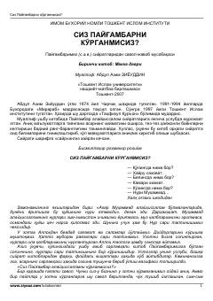

SPPaygʻambarimiz Muhammad (s.a.v.) siyratlari haqida savol-javoblar toʻplami.
Ushbu asar Paygʻambarimiz Muhammad (s.a.v.) hayotlari va siyratlariga bagʻishlangan boʻlib, savol-javoblar orqali oʻquvchiga maʼlumot beradi. Kitob muallif tomonidan yangicha uslubda yozilgan boʻlib, oʻquvchining Paygʻambarimizga boʻlgan muhabbatini va u zot haqidagi bilimlarini boyitishni maqsad qiladi.